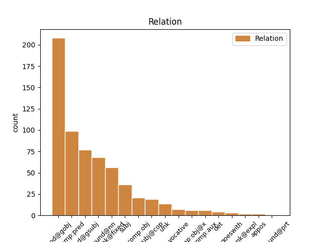
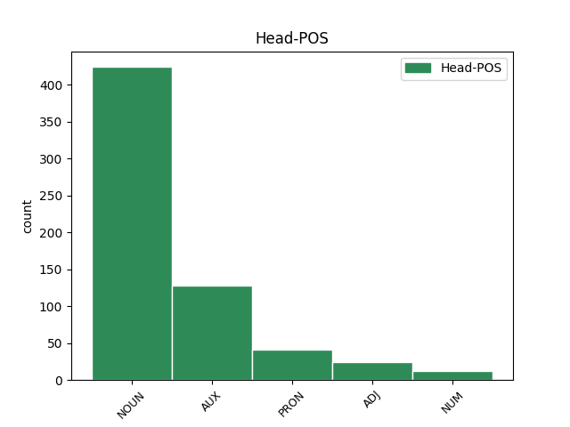
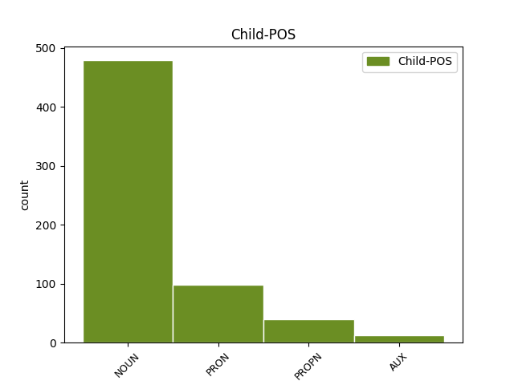

Distribution of features within this leaf



Agreement Rules sorted by frequency.
- When the dependent token is the modifer(mod@gobj) of the head token, and the head token is NOUN and the dependent token is NOUN.
1 Pellikka _ _ _ _ 0 _ _ _
2 aloittaisi _ _ _ _ 0 _ _ _
3 esteiden este NOUN N,Pl,Gen Case=Gen|Number=Plur 4 mod@gobj _ Alt=nmod:gobj
4 raivaamisen raivaaminen NOUN N,Sg,Gen Case=Gen|Number=Sing 0 _ _ _
5 Pekkasen _ _ _ _ 0 _ _ _
6 työryhmän _ _ _ _ 0 _ _ _
7 esityksillä _ _ _ _ 0 _ _ _
8 . _ _ _ _ 0 _ _ _
1 Esitys _ _ _ _ 0 _ _ _
2 : _ _ _ _ 0 _ _ _
3 Päätettäneen _ _ _ _ 0 _ _ _
4 määrätä _ _ _ _ 0 _ _ _
5 seuraavalle _ _ _ _ 0 _ _ _
6 pro pro NOUN N,Sg,Nom Case=Nom|Number=Sing 7 compound@nn _ Alt=compound:nn
7 gradu gradu NOUN N,Sg,Nom Case=Nom|Number=Sing 0 _ _ _
8 -tutkielmalle _ _ _ _ 0 _ _ _
9 tarkastajat _ _ _ _ 0 _ _ _
10 : _ _ _ _ 0 _ _ _
11 -- _ _ _ _ 0 _ _ _
1 Nenä _ _ _ _ 0 _ _ _
2 ja _ _ _ _ 0 _ _ _
3 paikallislehti _ _ _ _ 0 _ _ _
4 sen _ _ _ _ 0 _ _ _
5 kertovat _ _ _ _ 0 _ _ _
6 : _ _ _ _ 0 _ _ _
7 Valkeakoski _ _ _ _ 0 _ _ _
8 on _ _ _ _ 0 _ _ _
9 muka _ _ _ _ 0 _ _ _
10 ollut olla AUX V,Act,PcpNut,Sg,Nom Case=Nom|Number=Sing|PartForm=Past|VerbForm=Part|Voice=Act 0 _ _ _
11 suoranainen _ _ _ _ 0 _ _ _
12 hajuhelvetti hajuhelvetti NOUN N,Sg,Nom Case=Nom|Number=Sing 10 comp:pred _ _
13 elokuussa _ _ _ _ 0 _ _ _
14 . _ _ _ _ 0 _ _ _
1 Omana _ _ _ _ 0 _ _ _
2 , _ _ _ _ 0 _ _ _
3 käyttämättä _ _ _ _ 0 _ _ _
4 jääneenä _ _ _ _ 0 _ _ _
5 ansionaan _ _ _ _ 0 _ _ _
6 Pulliainen _ _ _ _ 0 _ _ _
7 mainitsee _ _ _ _ 0 _ _ _
8 yötä yö NOUN N,Sg,Par Case=Par|Number=Sing 0 _ _ _
9 päivää päivä NOUN N,Sg,Par Case=Par|Number=Sing 8 unk@fixed _ _
10 jatkuneen _ _ _ _ 0 _ _ _
11 työnsä _ _ _ _ 0 _ _ _
12 eduskunnassa _ _ _ _ 0 _ _ _
13 . _ _ _ _ 0 _ _ _
1 Tämä _ _ _ _ 0 _ _ _
2 saattaa _ _ _ _ 0 _ _ _
3 olla _ _ _ _ 0 _ _ _
4 myös _ _ _ _ 0 _ _ _
5 visiirin visiiri NOUN N,Sg,Gen Case=Gen|Number=Sing 7 mod@gsubj _ Alt=nmod:gsubj
6 lopullisen _ _ _ _ 0 _ _ _
7 irtoamisen irtoaminen NOUN N,Sg,Gen Case=Gen|Number=Sing 0 _ _ _
8 ajankohta _ _ _ _ 0 _ _ _
9 . _ _ _ _ 0 _ _ _
1 Homman homma NOUN N,Sg,Gen Case=Gen|Number=Sing 3 subj@cop _ _
2 luulisi _ _ _ _ 0 _ _ _
3 olevan olla AUX V,Act,PcpVa,Sg,Gen Case=Gen|Number=Sing|PartForm=Pres|VerbForm=Part|Voice=Act 0 _ _ _
4 harvinaisen _ _ _ _ 0 _ _ _
5 selvä _ _ _ _ 0 _ _ _
6 , _ _ _ _ 0 _ _ _
7 ehkä _ _ _ _ 0 _ _ _
8 . _ _ _ _ 0 _ _ _
1 Onneksi _ _ _ _ 0 _ _ _
2 sinun _ _ _ _ 0 _ _ _
3 gerbiiliressukoillasi _ _ _ _ 0 _ _ _
4 oli _ _ _ _ 0 _ _ _
5 sentään _ _ _ _ 0 _ _ _
6 toinen toinen PRON Pron,Qnt,Sg,Nom Case=Nom|Number=Sing|PronType=Ind 0 _ _ _
7 toisensa toinen PRON Pron,Recip,Sg,Nom,Px3 Case=Nom|Number=Sing|Person[psor]=3|PronType=Rcp 6 unk@fixed _ _
8 turvanaan _ _ _ _ 0 _ _ _
9 . _ _ _ _ 0 _ _ _
1 Syy _ _ _ _ 0 _ _ _
2 ei _ _ _ _ 0 _ _ _
3 ole _ _ _ _ 0 _ _ _
4 se _ _ _ _ 0 _ _ _
5 , _ _ _ _ 0 _ _ _
6 mikä _ _ _ _ 0 _ _ _
7 sen se PRON Pron,Dem,Sg,Gen Case=Gen|Number=Sing|PronType=Dem 9 subj@cop _ _
8 väitetään _ _ _ _ 0 _ _ _
9 olevan olla AUX V,Act,PcpVa,Sg,Gen Case=Gen|Number=Sing|PartForm=Pres|VerbForm=Part|Voice=Act 0 _ _ _
10 eli _ _ _ _ 0 _ _ _
11 koulutuksen _ _ _ _ 0 _ _ _
12 puute _ _ _ _ 0 _ _ _
13 , _ _ _ _ 0 _ _ _
14 vaan _ _ _ _ 0 _ _ _
15 väitän _ _ _ _ 0 _ _ _
16 päinvastaista _ _ _ _ 0 _ _ _
17 : _ _ _ _ 0 _ _ _
18 syy _ _ _ _ 0 _ _ _
19 on _ _ _ _ 0 _ _ _
20 liika- _ _ _ _ 0 _ _ _
21 ja _ _ _ _ 0 _ _ _
22 vääränlainen _ _ _ _ 0 _ _ _
23 koulutus _ _ _ _ 0 _ _ _
24 . _ _ _ _ 0 _ _ _
1 - _ _ _ _ 0 _ _ _
2 Ei _ _ _ _ 0 _ _ _
3 missään mikään PRON Pron,Qnt,Ine Case=Ine|PronType=Ind 0 _ _ _
4 nimessä nimi NOUN N,Sg,Ine Case=Ine|Number=Sing 3 unk@fixed _ _
5 tänään _ _ _ _ 0 _ _ _
6 saada _ _ _ _ 0 _ _ _
7 ku _ _ _ _ 0 _ _ _
8 pikkusen _ _ _ _ 0 _ _ _
9 alotettua _ _ _ _ 0 _ _ _
10 . _ _ _ _ 0 _ _ _
1 Kun _ _ _ _ 0 _ _ _
2 tusina _ _ _ _ 0 _ _ _
3 Chopinin _ _ _ _ 0 _ _ _
4 preludeja _ _ _ _ 0 _ _ _
5 , _ _ _ _ 0 _ _ _
6 pari _ _ _ _ 0 _ _ _
7 valssia _ _ _ _ 0 _ _ _
8 ja _ _ _ _ 0 _ _ _
9 b-molli b-molli NOUN N,Sg,Nom Case=Nom|Number=Sing 0 _ _ _
10 skertso skertso NOUN N,Sg,Nom Case=Nom|Number=Sing 9 goeswith _ Was18gow=4:conj
11 oli _ _ _ _ 0 _ _ _
12 singottu _ _ _ _ 0 _ _ _
13 kirkkosaliin _ _ _ _ 0 _ _ _
14 , _ _ _ _ 0 _ _ _
15 olokin _ _ _ _ 0 _ _ _
16 alkoi _ _ _ _ 0 _ _ _
17 olla _ _ _ _ 0 _ _ _
18 kiusallisen _ _ _ _ 0 _ _ _
19 mukava _ _ _ _ 0 _ _ _
20 . _ _ _ _ 0 _ _ _
1 sen _ _ _ _ 0 _ _ _
2 pituinen pituinen ADJ A,Sg,Nom Case=Nom|Number=Sing 0 _ _ _
3 se se PRON Pron,Dem,Sg,Nom Case=Nom|Number=Sing|PronType=Dem 2 subj _ _
1 sit _ _ _ _ 0 _ _ _
2 tota _ _ _ _ 0 _ _ _
3 , _ _ _ _ 0 _ _ _
4 sit _ _ _ _ 0 _ _ _
5 mä minä PRON Pron,Pers,Sg1,Nom Case=Nom|Number=Sing|Person=1|PronType=Prs|Style=Coll 6 subj _ _
6 soitin soitin NOUN N,Sg,Nom Case=Nom|Number=Sing 0 _ _ _
7 Soilille _ _ _ _ 0 _ _ _
8 ja _ _ _ _ 0 _ _ _
9 sanoin _ _ _ _ 0 _ _ _
10 hyvää _ _ _ _ 0 _ _ _
11 syntymäpäivää _ _ _ _ 0 _ _ _
12 ja _ _ _ _ 0 _ _ _
13 sit _ _ _ _ 0 _ _ _
14 mä _ _ _ _ 0 _ _ _
15 lupasin _ _ _ _ 0 _ _ _
16 mennä _ _ _ _ 0 _ _ _
17 käymää _ _ _ _ 0 _ _ _
18 siel _ _ _ _ 0 _ _ _
19 ja _ _ _ _ 0 _ _ _
20 sit _ _ _ _ 0 _ _ _
21 se _ _ _ _ 0 _ _ _
22 sano _ _ _ _ 0 _ _ _
23 et _ _ _ _ 0 _ _ _
24 Akiro _ _ _ _ 0 _ _ _
25 ja _ _ _ _ 0 _ _ _
26 Matti _ _ _ _ 0 _ _ _
27 tulee _ _ _ _ 0 _ _ _
28 ehkä _ _ _ _ 0 _ _ _
29 kanssa _ _ _ _ 0 _ _ _
30 ja _ _ _ _ 0 _ _ _
31 mm _ _ _ _ 0 _ _ _
32 ja _ _ _ _ 0 _ _ _
33 tota _ _ _ _ 0 _ _ _
34 et _ _ _ _ 0 _ _ _
35 A- _ _ _ _ 0 _ _ _
36 et _ _ _ _ 0 _ _ _
37 Akiro _ _ _ _ 0 _ _ _
38 soitti _ _ _ _ 0 _ _ _
39 kans _ _ _ _ 0 _ _ _
40 aamulla _ _ _ _ 0 _ _ _
41 ja _ _ _ _ 0 _ _ _
42 muisti _ _ _ _ 0 _ _ _
43 että _ _ _ _ 0 _ _ _
44 on _ _ _ _ 0 _ _ _
45 syntymäpäivä _ _ _ _ 0 _ _ _
46 no _ _ _ _ 0 _ _ _
47 sit _ _ _ _ 0 _ _ _
48 ne _ _ _ _ 0 _ _ _
49 tuli _ _ _ _ 0 _ _ _
50 ja _ _ _ _ 0 _ _ _
51 ne _ _ _ _ 0 _ _ _
52 toi _ _ _ _ 0 _ _ _
53 kans _ _ _ _ 0 _ _ _
54 Tupikselt _ _ _ _ 0 _ _ _
55 kukkii _ _ _ _ 0 _ _ _
56 ja _ _ _ _ 0 _ _ _
57 sit _ _ _ _ 0 _ _ _
58 Akiro _ _ _ _ 0 _ _ _
59 paljasti _ _ _ _ 0 _ _ _
60 et _ _ _ _ 0 _ _ _
61 . _ _ _ _ 0 _ _ _
1 Voi _ _ _ _ 0 _ _ _
2 miten _ _ _ _ 0 _ _ _
3 kiva kiva ADJ A,Sg,Nom Case=Nom|Number=Sing 0 _ _ _
4 toi _ _ _ _ 0 _ _ _
5 sun _ _ _ _ 0 _ _ _
6 puserosi pusero NOUN N,Sg,Nom,PxSg2 Case=Nom|Number=Sing|Number[psor]=Sing|Person[psor]=2 3 subj _ _
7 ! _ _ _ _ 0 _ _ _
1 Ja _ _ _ _ 0 _ _ _
2 nyt _ _ _ _ 0 _ _ _
3 saat _ _ _ _ 0 _ _ _
4 luvan _ _ _ _ 0 _ _ _
5 olla _ _ _ _ 0 _ _ _
6 hiljaa _ _ _ _ 0 _ _ _
7 ja _ _ _ _ 0 _ _ _
8 kuunnella _ _ _ _ 0 _ _ _
9 lauluani _ _ _ _ 0 _ _ _
10 , _ _ _ _ 0 _ _ _
11 neiti neiti NOUN N,Sg,Nom Case=Nom|Number=Sing 12 compound@nn _ Alt=compound:nn
12 Näsäviisas näsäviisas ADJ A,Sg,Nom Case=Nom|Number=Sing 0 _ _ _
13 . _ _ _ _ 0 _ _ _
1 Sinipaidan _ _ _ _ 0 _ _ _
2 keksi keksi NOUN N,Sg,Nom Case=Nom|Number=Sing 0 _ _ _
3 Uudenmaan _ _ _ _ 0 _ _ _
4 ykkösmies _ _ _ _ 0 _ _ _
5 Markus markus PROPN N,Prop,Sg,Nom Case=Nom|Number=Sing 2 subj _ Alt=name
6 Kainulainen _ _ _ _ 0 _ _ _
7 . _ _ _ _ 0 _ _ _
1 Äänestykseen _ _ _ _ 0 _ _ _
2 osallistui _ _ _ _ 0 _ _ _
3 yli _ _ _ _ 0 _ _ _
4 6 _ _ _ _ 0 _ _ _
5 miljoonaa _ _ _ _ 0 _ _ _
6 koripallofania _ _ _ _ 0 _ _ _
7 ja _ _ _ _ 0 _ _ _
8 mikä mikä PRON Pron,Interr,Sg,Nom Case=Nom|Number=Sing|PronType=Int 23 unk _ Missed-Rel=phrm
9 tässä _ _ _ _ 0 _ _ _
10 äänestyksessä _ _ _ _ 0 _ _ _
11 oli _ _ _ _ 0 _ _ _
12 vielä _ _ _ _ 0 _ _ _
13 erikoista _ _ _ _ 0 _ _ _
14 niin _ _ _ _ 0 _ _ _
15 se _ _ _ _ 0 _ _ _
16 , _ _ _ _ 0 _ _ _
17 että _ _ _ _ 0 _ _ _
18 Hill _ _ _ _ 0 _ _ _
19 on _ _ _ _ 0 _ _ _
20 myös _ _ _ _ 0 _ _ _
21 ensimmäinen _ _ _ _ 0 _ _ _
22 ns. _ _ _ _ 0 _ _ _
23 rookiepelaaja rookiepelaaja NOUN N,Sg,Nom Case=Nom|Number=Sing 0 _ _ _
24 , _ _ _ _ 0 _ _ _
25 joka _ _ _ _ 0 _ _ _
26 voittaa _ _ _ _ 0 _ _ _
27 tämän _ _ _ _ 0 _ _ _
28 äänestyksen _ _ _ _ 0 _ _ _
29 . _ _ _ _ 0 _ _ _
1 Tutkijat tutkija NOUN N,Pl,Nom Case=Nom|Number=Plur 0 _ _ _
2 Reetta reetta PROPN N,Prop,Sg,Nom Case=Nom|Number=Sing 1 appos _ Alt=name
3 Nieminen _ _ _ _ 0 _ _ _
4 ja _ _ _ _ 0 _ _ _
5 Ilkka _ _ _ _ 0 _ _ _
6 Nummela _ _ _ _ 0 _ _ _
7 sekä _ _ _ _ 0 _ _ _
8 Miisa _ _ _ _ 0 _ _ _
9 Jääskeläinen _ _ _ _ 0 _ _ _
10 valottavat _ _ _ _ 0 _ _ _
11 Minnan _ _ _ _ 0 _ _ _
12 elämää _ _ _ _ 0 _ _ _
13 kukin _ _ _ _ 0 _ _ _
14 omasta _ _ _ _ 0 _ _ _
15 näkökulmastaan _ _ _ _ 0 _ _ _
16 . _ _ _ _ 0 _ _ _
1 elokuvan _ _ _ _ 0 _ _ _
2 kesto kesto NOUN N,Sg,Nom Case=Nom|Number=Sing 5 subj _ _
3 n. _ _ _ _ 0 _ _ _
4 1 _ _ _ _ 0 _ _ _
5 tunti tunti NOUN N,Sg,Nom Case=Nom|Number=Sing 0 _ _ _
6 ja _ _ _ _ 0 _ _ _
7 10 _ _ _ _ 0 _ _ _
8 minuuttia _ _ _ _ 0 _ _ _
9 . _ _ _ _ 0 _ _ _
1 Ammatissani _ _ _ _ 0 _ _ _
2 joudun _ _ _ _ 0 _ _ _
3 paikallissijojen _ _ _ _ 0 _ _ _
4 nimitysten _ _ _ _ 0 _ _ _
5 kanssa _ _ _ _ 0 _ _ _
6 tekemisiin _ _ _ _ 0 _ _ _
7 harva harva PRON Pron,Qnt,Sg,Nom Case=Nom|Number=Sing|PronType=Ind 9 det _ FTB-PronType=Qnt
8 se _ _ _ _ 0 _ _ _
9 päivä päivä NOUN N,Sg,Nom Case=Nom|Number=Sing 0 _ _ _
10 . _ _ _ _ 0 _ _ _
1 Cunningham _ _ _ _ 0 _ _ _
2 on _ _ _ _ 0 _ _ _
3 kieltänyt _ _ _ _ 0 _ _ _
4 itsensä itse PRON Pron,Refl,Sg,Gen,Px3 Case=Gen|Number=Sing|Person[psor]=3|Reflex=Yes 5 mod@gobj _ Alt=nmod:gobj
5 kuvaamisen kuvaaminen NOUN N,Sg,Gen Case=Gen|Number=Sing 0 _ _ _
6 . _ _ _ _ 0 _ _ _
1 Tallinnan _ _ _ _ 0 _ _ _
2 hotelli _ _ _ _ 0 _ _ _
3 Virun viru PROPN N,Prop,Sg,Gen Case=Gen|Number=Sing 4 mod@gobj _ Alt=nmod:gobj
4 rakentamisen rakentaminen NOUN N,Sg,Gen Case=Gen|Number=Sing 0 _ _ _
5 myötä _ _ _ _ 0 _ _ _
1 Tilaisuus _ _ _ _ 0 _ _ _
2 kestää _ _ _ _ 0 _ _ _
3 kaksi _ _ _ _ 0 _ _ _
4 viiva viiva NOUN N,Sg,Nom Case=Nom|Number=Sing 5 unk _ Missed-Rel=phrm
5 kolme kolme NUM Num,Card,Sg,Nom Case=Nom|Number=Sing|NumType=Card 0 _ _ _
6 tuntia _ _ _ _ 0 _ _ _
7 . _ _ _ _ 0 _ _ _
1 Suomen _ _ _ _ 0 _ _ _
2 valtion _ _ _ _ 0 _ _ _
3 kannattaa _ _ _ _ 0 _ _ _
4 tukea _ _ _ _ 0 _ _ _
5 oman _ _ _ _ 0 _ _ _
6 kielen _ _ _ _ 0 _ _ _
7 ja _ _ _ _ 0 _ _ _
8 kulttuurin _ _ _ _ 0 _ _ _
9 edistämistä _ _ _ _ 0 _ _ _
10 Virossa _ _ _ _ 0 _ _ _
11 , _ _ _ _ 0 _ _ _
12 vallankin _ _ _ _ 0 _ _ _
13 kun _ _ _ _ 0 _ _ _
14 suomen _ _ _ _ 0 _ _ _
15 kieltä kieli NOUN N,Sg,Par Case=Par|Number=Sing 16 comp:obj _ _
16 taitavia taitava ADJ A,Pl,Par Case=Par|Number=Plur 0 _ _ _
17 henkilöitä _ _ _ _ 0 _ _ _
18 tarvitaan _ _ _ _ 0 _ _ _
19 kaupan _ _ _ _ 0 _ _ _
20 ja _ _ _ _ 0 _ _ _
21 kulttuurivaihdon _ _ _ _ 0 _ _ _
22 piirissä _ _ _ _ 0 _ _ _
23 . _ _ _ _ 0 _ _ _
1 On _ _ _ _ 0 _ _ _
2 se se PRON Pron,Dem,Sg,Nom Case=Nom|Number=Sing|PronType=Dem 7 unk@expl _ Alt=7_expl|Missed-Rel=phrm
3 hankalaa _ _ _ _ 0 _ _ _
4 tämä _ _ _ _ 0 _ _ _
5 päivittäisten _ _ _ _ 0 _ _ _
6 asioiden _ _ _ _ 0 _ _ _
7 hoitaminen hoitaminen NOUN N,Sg,Nom Case=Nom|Number=Sing 0 _ _ _
8 . _ _ _ _ 0 _ _ _
1 Tyrrell-talli _ _ _ _ 0 _ _ _
2 toivoo _ _ _ _ 0 _ _ _
3 Katayaman katayama PROPN N,Prop,Sg,Gen Case=Gen|Number=Sing 4 subj _ _
4 voivan voida AUX V,Act,PcpVa,Sg,Gen Case=Gen|Number=Sing|PartForm=Pres|VerbForm=Part|Voice=Act 0 _ _ _
5 ajaa _ _ _ _ 0 _ _ _
6 . _ _ _ _ 0 _ _ _
1 Jos _ _ _ _ 0 _ _ _
2 vanhemmat _ _ _ _ 0 _ _ _
3 olisivat _ _ _ _ 0 _ _ _
4 olleet olla AUX V,Act,PcpNut,Pl,Nom Case=Nom|Number=Plur|PartForm=Past|VerbForm=Part|Voice=Act 0 _ _ _
5 toiset toinen PRON Pron,Qnt,Pl,Nom Case=Nom|Number=Plur|PronType=Ind 4 comp:pred _ FTB-PronType=Qnt
6 , _ _ _ _ 0 _ _ _
7 jos _ _ _ _ 0 _ _ _
8 ei _ _ _ _ 0 _ _ _
9 olisi _ _ _ _ 0 _ _ _
10 ollut _ _ _ _ 0 _ _ _
11 niin _ _ _ _ 0 _ _ _
12 raskas _ _ _ _ 0 _ _ _
13 työ _ _ _ _ 0 _ _ _
14 joka _ _ _ _ 0 _ _ _
15 kulutti _ _ _ _ 0 _ _ _
16 kaikkien _ _ _ _ 0 _ _ _
17 hermoja _ _ _ _ 0 _ _ _
18 , _ _ _ _ 0 _ _ _
19 jos _ _ _ _ 0 _ _ _
20 sotaa _ _ _ _ 0 _ _ _
21 ei _ _ _ _ 0 _ _ _
22 olisi _ _ _ _ 0 _ _ _
23 tullut _ _ _ _ 0 _ _ _
24 , _ _ _ _ 0 _ _ _
25 ei _ _ _ _ 0 _ _ _
26 asekätkentää _ _ _ _ 0 _ _ _
27 , _ _ _ _ 0 _ _ _
28 ei _ _ _ _ 0 _ _ _
29 vankilaa _ _ _ _ 0 _ _ _
30 , _ _ _ _ 0 _ _ _
31 jos _ _ _ _ 0 _ _ _
32 ja _ _ _ _ 0 _ _ _
33 jos _ _ _ _ 0 _ _ _
34 ja _ _ _ _ 0 _ _ _
35 jos _ _ _ _ 0 _ _ _
36 . _ _ _ _ 0 _ _ _
1 Sanoin _ _ _ _ 0 _ _ _
2 sen se PRON Pron,Dem,Sg,Gen Case=Gen|Number=Sing|PronType=Dem 3 subj _ _
3 voivan voida AUX V,Act,PcpVa,Sg,Gen Case=Gen|Number=Sing|PartForm=Pres|VerbForm=Part|Voice=Act 0 _ _ _
4 lähteä _ _ _ _ 0 _ _ _
5 aivan _ _ _ _ 0 _ _ _
6 koska _ _ _ _ 0 _ _ _
7 halusi _ _ _ _ 0 _ _ _
1 yksityishenkilö _ _ _ _ 0 _ _ _
2 Speden spede PROPN N,Prop,Sg,Gen Case=Gen|Number=Sing 9 subj _ _
3 , _ _ _ _ 0 _ _ _
4 Pertti _ _ _ _ 0 _ _ _
5 Pasasen _ _ _ _ 0 _ _ _
6 , _ _ _ _ 0 _ _ _
7 on _ _ _ _ 0 _ _ _
8 todettu _ _ _ _ 0 _ _ _
9 nauravan naurava ADJ A,Sg,Gen Case=Gen|Number=Sing 0 _ _ _
10 vain _ _ _ _ 0 _ _ _
11 harvoin _ _ _ _ 0 _ _ _
12 . _ _ _ _ 0 _ _ _
1 Raimo _ _ _ _ 0 _ _ _
2 huomasi _ _ _ _ 0 _ _ _
3 meidän me PRON Pron,Pers,Pl1,Gen Case=Gen|Number=Plur|Person=1|PronType=Prs 4 mod@gsubj _ Alt=nmod:gsubj
4 katsomisemme katsominen NOUN N,Sg,Gen,PxPl1 Case=Gen|Number=Sing|Number[psor]=Plur|Person[psor]=1 0 _ _ _
5 , _ _ _ _ 0 _ _ _
6 kääntyi _ _ _ _ 0 _ _ _
7 , _ _ _ _ 0 _ _ _
8 näki _ _ _ _ 0 _ _ _
9 Kaisun _ _ _ _ 0 _ _ _
10 ja _ _ _ _ 0 _ _ _
11 kysyi _ _ _ _ 0 _ _ _
12 , _ _ _ _ 0 _ _ _
13 halusinko _ _ _ _ 0 _ _ _
14 , _ _ _ _ 0 _ _ _
15 että _ _ _ _ 0 _ _ _
16 hän _ _ _ _ 0 _ _ _
17 haki _ _ _ _ 0 _ _ _
18 emäntäni _ _ _ _ 0 _ _ _
19 baariin _ _ _ _ 0 _ _ _
20 . _ _ _ _ 0 _ _ _
1 Kaikkien _ _ _ _ 0 _ _ _
2 EU-maiden _ _ _ _ 0 _ _ _
3 valmistajien _ _ _ _ 0 _ _ _
4 , _ _ _ _ 0 _ _ _
5 venesuunnittelijoiden _ _ _ _ 0 _ _ _
6 ja _ _ _ _ 0 _ _ _
7 asialle _ _ _ _ 0 _ _ _
8 vihkiytyneiden _ _ _ _ 0 _ _ _
9 virkamiesten _ _ _ _ 0 _ _ _
10 täytyy _ _ _ _ 0 _ _ _
11 voida voida AUX V,Act,InfA,Lat Case=Lat|InfForm=1|VerbForm=Inf|Voice=Act 0 _ _ _
12 saada saada AUX V,Act,InfA,Lat Case=Lat|InfForm=1|VerbForm=Inf|Voice=Act 11 comp:aux _ _
13 osallistua _ _ _ _ 0 _ _ _
14 päätöksentekoon _ _ _ _ 0 _ _ _
15 . _ _ _ _ 0 _ _ _
1 Istunnon _ _ _ _ 0 _ _ _
2 ministerikadon _ _ _ _ 0 _ _ _
3 vuoksi _ _ _ _ 0 _ _ _
4 olisi _ _ _ _ 0 _ _ _
5 seuraava _ _ _ _ 0 _ _ _
6 varamies _ _ _ _ 0 _ _ _
7 ollut olla AUX V,Act,PcpNut,Sg,Nom Case=Nom|Number=Sing|PartForm=Past|VerbForm=Part|Voice=Act 0 _ _ _
8 Leppänen leppänen PROPN N,Prop,Sg,Nom Case=Nom|Number=Sing 7 comp:pred _ _
9 , _ _ _ _ 0 _ _ _
10 joka _ _ _ _ 0 _ _ _
11 olikin _ _ _ _ 0 _ _ _
12 hetken _ _ _ _ 0 _ _ _
13 " _ _ _ _ 0 _ _ _
14 melkein _ _ _ _ 0 _ _ _
15 " _ _ _ _ 0 _ _ _
16 valtiovarainministeri _ _ _ _ 0 _ _ _
17 . _ _ _ _ 0 _ _ _
1 ommoo _ _ _ _ 0 _ _ _
2 mehteesäkkäät _ _ _ _ 0 _ _ _
3 talolliset talollinen NOUN N,Pl,Nom Case=Nom|Number=Plur 4 subj _ _
4 soanneet saada AUX V,Act,PcpNut,Pl,Nom Case=Nom|Number=Plur|PartForm=Past|Style=Coll|VerbForm=Part|Voice=Act 0 _ _ _
5 hakatak _ _ _ _ 0 _ _ _
6 . _ _ _ _ 0 _ _ _
1 Hää _ _ _ _ 0 _ _ _
2 vielä _ _ _ _ 0 _ _ _
3 mitään mikään PRON Pron,Qnt,Par Case=Par|PronType=Ind 4 comp:obj _ FTB-PronType=Qnt
4 tajua taju NOUN N,Sg,Par Case=Par|Number=Sing 0 _ _ _
5 , _ _ _ _ 0 _ _ _
6 pää _ _ _ _ 0 _ _ _
7 on _ _ _ _ 0 _ _ _
8 tyhjä _ _ _ _ 0 _ _ _
9 ja _ _ _ _ 0 _ _ _
10 korvatkin _ _ _ _ 0 _ _ _
11 solmussa _ _ _ _ 0 _ _ _
12 ! _ _ _ _ 0 _ _ _
1 Kalevi kalevi PROPN N,Prop,Sg,Nom Case=Nom|Number=Sing 5 vocative _ Alt=name
2 Sorsa _ _ _ _ 0 _ _ _
3 , _ _ _ _ 0 _ _ _
4 lyhyt _ _ _ _ 0 _ _ _
5 repliikki repliikki NOUN N,Sg,Nom Case=Nom|Number=Sing 0 _ _ _
6 teillä _ _ _ _ 0 _ _ _
7 . _ _ _ _ 0 _ _ _
Disagree Examples:
1 Uuden _ _ _ _ 0 _ _ _
2 identiteetin identiteetti NOUN N,Sg,Gen Case=Gen|Number=Sing 3 mod@gobj _ Alt=nmod:gobj
3 rakentaminen rakentaminen NOUN N,Sg,Nom Case=Nom|Number=Sing 0 _ _ _
4 on _ _ _ _ 0 _ _ _
5 varmasti _ _ _ _ 0 _ _ _
6 vaikeaa _ _ _ _ 0 _ _ _
7 . _ _ _ _ 0 _ _ _
1 Egaliteetti _ _ _ _ 0 _ _ _
2 sopii _ _ _ _ 0 _ _ _
3 myös _ _ _ _ 0 _ _ _
4 tilanteisiin _ _ _ _ 0 _ _ _
5 , _ _ _ _ 0 _ _ _
6 joissa _ _ _ _ 0 _ _ _
7 osapuolet _ _ _ _ 0 _ _ _
8 tunnustavat _ _ _ _ 0 _ _ _
9 olevansa _ _ _ _ 0 _ _ _
10 vastuussa _ _ _ _ 0 _ _ _
11 toinen toinen PRON Pron,Qnt,Sg,Nom Case=Nom|Number=Sing|PronType=Ind 0 _ _ _
12 toisistaan toinen PRON Pron,Recip,Pl,Ela,Px3 Case=Ela|Number=Plur|Person[psor]=3|PronType=Rcp 11 unk@fixed _ _
13 samalla _ _ _ _ 0 _ _ _
14 tavalla _ _ _ _ 0 _ _ _
15 kuin _ _ _ _ 0 _ _ _
16 itsestään _ _ _ _ 0 _ _ _
17 . _ _ _ _ 0 _ _ _
1 Raha _ _ _ _ 0 _ _ _
2 ei _ _ _ _ 0 _ _ _
3 tulene _ _ _ _ 0 _ _ _
4 olemaan olla AUX V,Act,InfMa,Ill Case=Ill|InfForm=3|VerbForm=Inf|Voice=Act 0 _ _ _
5 ongelma ongelma NOUN N,Sg,Nom Case=Nom|Number=Sing 4 comp:pred _ _
1 Turhien _ _ _ _ 0 _ _ _
2 tutkimusten tutkimus NOUN N,Pl,Gen Case=Gen|Number=Plur 5 mod@gobj _ Alt=nmod:gobj
3 ja _ _ _ _ 0 _ _ _
4 hoitojen _ _ _ _ 0 _ _ _
5 karsiminen karsiminen NOUN N,Sg,Nom Case=Nom|Number=Sing 0 _ _ _
6 säästää _ _ _ _ 0 _ _ _
7 työtä _ _ _ _ 0 _ _ _
8 , _ _ _ _ 0 _ _ _
9 aikaa _ _ _ _ 0 _ _ _
10 ja _ _ _ _ 0 _ _ _
11 rahaakin _ _ _ _ 0 _ _ _
12 . _ _ _ _ 0 _ _ _
1 Suomalaiset _ _ _ _ 0 _ _ _
2 lääkärit lääkäri NOUN N,Pl,Nom Case=Nom|Number=Plur 6 subj _ _
3 Euroopan _ _ _ _ 0 _ _ _
4 innokkaimpia _ _ _ _ 0 _ _ _
5 röntgenien _ _ _ _ 0 _ _ _
6 otattajia otattaja NOUN N,Pl,Par Case=Par|Number=Plur 0 _ _ _